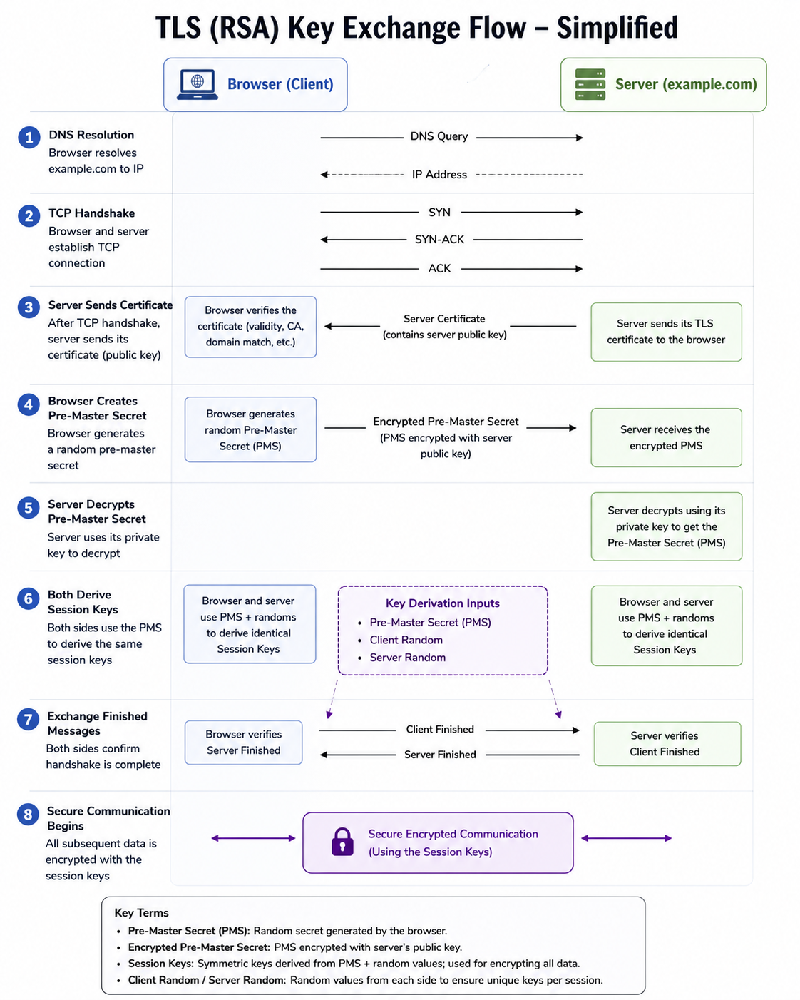

TLS 1.2 RSA Handshake
Understanding exactly how TLS 1.2 establishes a session makes the quantum vulnerability concrete. The weak point isn't the encryption of your data. It's one specific step in the handshake where a secret crosses the wire protected by RSA. That's what a quantum computer breaks, and that's what ML-KEM replaces.
The 8-Step Flow
Every TLS 1.2 session using RSA key exchange follows the same sequence. Steps 1 and 2 are standard TCP setup. Steps 3 through 6 are the TLS handshake where the shared secret is established. Steps 7 and 8 confirm the handshake and begin encrypted communication.

| 1 | DNS Resolution | Browser resolves the domain to an IP address. Standard DNS query and response. No TLS involved yet. |
| 2 | TCP Handshake | Three-way TCP handshake: SYN, SYN-ACK, ACK. Establishes the transport connection. Still no encryption. |
| 3 | Server Sends Certificate | Server sends its TLS certificate to the browser. The certificate contains the server's RSA public key. The browser verifies the certificate: checks the CA signature, validity period, and domain match. If verification passes, the browser trusts that public key belongs to the server. |
| 4 | Browser Creates Pre-Master Secret | Browser generates a random value called the Pre-Master Secret (PMS). It encrypts the PMS using the server's RSA public key from the certificate, then sends the encrypted PMS across the network. This is the step a quantum computer breaks. The encrypted PMS is visible to anyone capturing the session. If the server's RSA private key is ever compromised or broken, the PMS can be recovered and the entire session decrypted retroactively. |
| 5 | Server Decrypts Pre-Master Secret | Server uses its RSA private key to decrypt the PMS. Both sides now hold the same Pre-Master Secret. No one else does, assuming RSA holds. |
| 6 | Both Derive Session Keys | Both sides independently run the same key derivation function using three inputs: the Pre-Master Secret, a Client Random, and a Server Random. The randoms were exchanged in plaintext during the ClientHello and ServerHello. The output is the same symmetric session key on both sides, without it being transmitted directly. |
| 7 | Exchange Finished Messages | Both sides send a Finished message encrypted with the newly derived session key. This confirms that the handshake completed correctly and that both sides derived the same keys. Any tampering with handshake messages would cause this step to fail. |
| 8 | Secure Communication Begins | All subsequent HTTP data is encrypted with AES using the session keys. This is the symmetric encryption phase. Fast, efficient, and not threatened by quantum computers. |
Where the Vulnerability Lives
Step 4 is the problem. The browser sends an encrypted Pre-Master Secret across the network. That ciphertext is protected by the server's long-term RSA public key. The same key is used for every session, for the entire lifetime of the certificate.
An adversary who captures the TLS handshake at Step 4 has everything needed to eventually decrypt the session. They don't need to break it today. They store the captured ciphertext and wait. When a sufficiently powerful quantum computer becomes available, they use Shor's algorithm to factor the RSA key and recover the Pre-Master Secret. From there, deriving the session keys is straightforward.
What an attacker captures
- The encrypted Pre-Master Secret (Step 4)
- The Client Random and Server Random (in plaintext)
- The server's certificate and RSA public key
With these three elements and a quantum computer capable of breaking RSA, the full session key derivation can be reproduced and all traffic decrypted.
What is not at risk
- AES-256 session encryption (Step 8)
- The server certificate itself (proves identity, not confidentiality)
- SHA-256/384 used for MAC and integrity
Quantum computers do not provide a practical attack against AES-256 at current key lengths. The data encryption step is not the problem.
How TLS 1.3 Fixed This
TLS 1.3 removed RSA key exchange entirely. There is no Pre-Master Secret encrypted to a long-term certificate key. The certificate is now used only for authentication: it signs the handshake to prove the server's identity, but plays no role in establishing the secret.
Instead, both sides generate ephemeral key pairs for each session. They exchange public halves, run a Diffie-Hellman calculation, and independently arrive at the same shared secret. The secret is never transmitted. The ephemeral keys are discarded when the session ends. There is nothing for an attacker to capture and hold for later decryption.
| TLS 1.2 (RSA) | TLS 1.3 (ECDHE / ML-KEM) | |
|---|---|---|
| Session secret established by | Browser encrypts PMS to server's long-term RSA public key | Both sides compute independently via ephemeral key exchange |
| Secret transmitted? | Yes. Encrypted PMS sent over the wire. | No. Never transmitted. |
| Certificate role | Key exchange and authentication | Authentication only |
| Forward secrecy | Not guaranteed | Always on |
| Quantum vulnerable? | Yes. RSA key exchange broken by Shor's algorithm. | With X25519 only: still exposed. With ML-KEM: protected. |
- Pre-Master Secret (PMS): A random value generated by the browser. The basis for deriving session keys in TLS 1.2.
- Encrypted Pre-Master Secret: The PMS encrypted with the server's RSA public key. Sent across the network in Step 4.
- Session Keys: Symmetric keys derived from PMS + Client Random + Server Random. Used to encrypt all HTTP data.
- Client Random / Server Random: Random values exchanged in plaintext during the hello messages. Combined with the PMS to produce unique session keys per session.
- Shor's Algorithm: A quantum algorithm that can factor large integers efficiently. Breaks RSA key exchange by recovering the private key from the public key.
- Forward Secrecy: A property where compromise of a long-term key does not expose past sessions. TLS 1.2 RSA does not have it. TLS 1.3 always does.